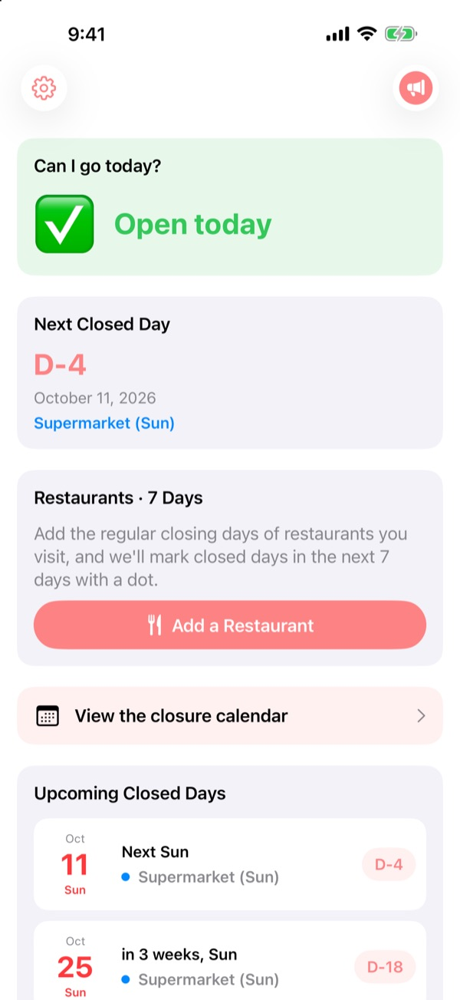
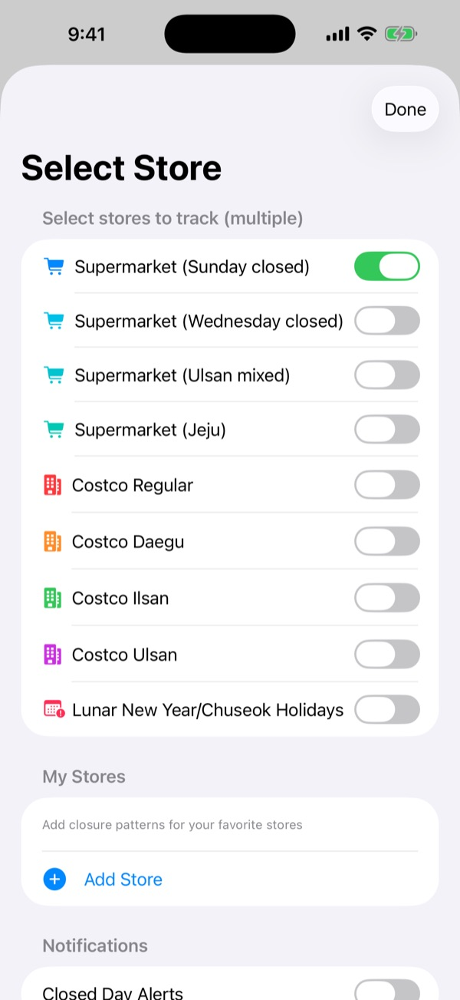
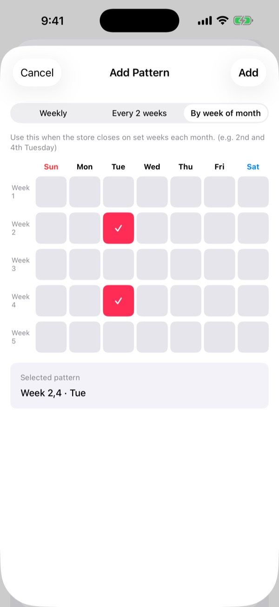
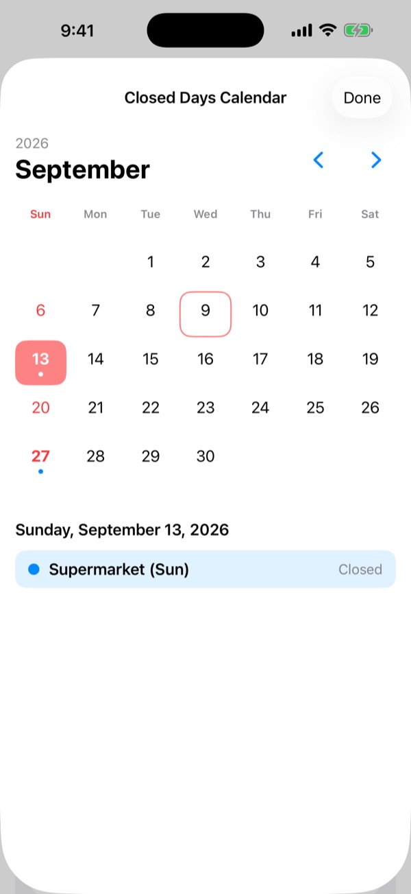
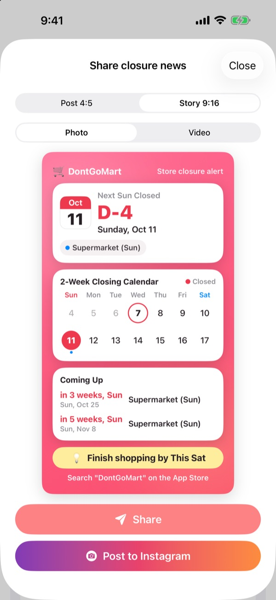

Before you go shopping,
check that it's open
Open the app and the first thing you see is whether your stores are open today. You get a heads up before each closed day, so you never walk up to locked doors.
Every feature is free. No account, no ads.

Try it with your store
Pick a store to see whether it's open today and when it closes next. It uses the same rules as the app.
Ever shown up with a shopping list to a closed store?
Large supermarkets in Korea must close two days a month, but which days depends on where you are. Most close on the second and fourth Sunday, some on Wednesdays, and Ulsan and Jeju have their own rules. Costco varies by location. DontGoMart works out the closed days for the stores you use and tells you first thing whether you can go today.
Right for every region
Pick stores that close on Sundays or Wednesdays, or regions with their own schedule such as Ulsan and Jeju. Costco regular warehouses and the Daegu, Ilsan and Ulsan locations each have their own setting.
Lunar New Year and Chuseok closures show up too, and you can follow several stores at once.

Your local store and go-to restaurants
If a store isn't listed, add it yourself: every week, every other week, or which weeks of the month and which weekday it closes.
For restaurants, paste a link shared from Naver Map or pick a screenshot of the restaurant's info page, and the regular days off are filled in for you. Text in photos is read on your device only.

Reminders and widgets so you don't forget
Get an alert 1, 2, 3 or 7 days ahead at the time you choose, plus a reminder the day before that today is a good day to shop.
Home Screen and Lock Screen widgets show the nearest closed day, whether this Sunday is open, and your restaurants' next seven days. The calendar shows a whole month of closed days.

Share it in one card
Turn the news into a card with a two-week calendar and a shopping tip and send it to the family chat. Cards come in Instagram post and Story sizes, and as short videos.

Three steps to start
- 1
Pick your stores
Turn on the stores and regions you shop at. Choose as many as you like.
- 2
Turn on reminders
Choose how many days ahead and at what time.
- 3
Add a widget
Check from your Home Screen or Lock Screen without opening the app.
Closing rules by store
- Supermarket (Sunday closed)
- 2nd and 4th Sunday · most regions
- Supermarket (Wednesday closed)
- 2nd and 4th Wednesday · parts of Gyeonggi, Cheongju
- Supermarket (Ulsan)
- 2nd Wednesday, 4th Sunday
- Supermarket (Jeju)
- 2nd Friday, 4th Saturday
- Costco Regular
- 2nd and 4th Sunday
- Costco Daegu
- 2nd and 4th Monday · Daegu, Daegu Innovation
- Costco Ilsan
- 2nd and 4th Wednesday
- Costco Ulsan
- 2nd Wednesday, 4th Sunday
- Lunar New Year, Chuseok
- closed on the day itself
Mandatory closing days are set by local governments and can change. If something looks wrong, let us know at the address below.
Questions
The closed days don't match reality.
Mandatory closing days are set by local ordinances and differ by region. Check in Settings that you picked the right store type (Sunday closed, Wednesday closed, Ulsan, Jeju and so on). If it still doesn't match, email us the store name and area and we'll look into it.
My store isn't on the list.
Add it as your own store. Choose every week, every other week, or which weeks of the month and which weekday it closes, for example the second and fourth Sunday.
A restaurant's days off weren't filled in correctly.
When importing from a Naver Map link, the restaurant's place page needs to list its regular days off. When using a screenshot, make sure the closing note is visible on screen. You can edit what was filled in before saving.
I'm not getting reminders.
Check that notifications are allowed in Settings > Notifications > DontGoMart, and that closed-day reminders are turned on inside the app.
My widget isn't updating.
Opening the app once refreshes the widgets. If it still looks stale, remove the widget and add it again.
What are tips?
Every feature in DontGoMart is free. The coffee, cake and meal tips are a way to support the developer. After a tip you get a thank-you and a supporter badge showing how many times you've tipped.
Where do I ask about payments or refunds?
Apple handles in-app purchases, so request refunds at reportaproblem.apple.com. For anything else, email us.
How is my data handled?
There are no accounts, ads or tracking tools, and text in screenshots is read on your device only. See the Privacy Policy below for details.
Questions or ideas? Write to hyunho.lee.1993@gmail.com. We usually reply within a day or two.